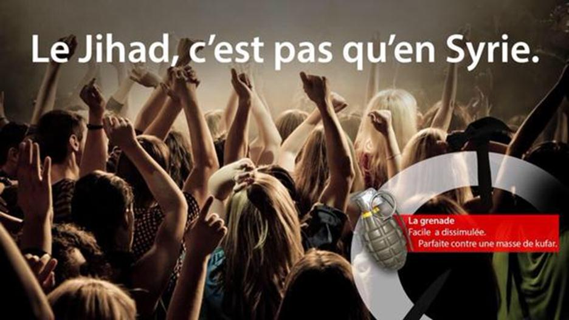

Le vendredi 13 novembre 2015, une série de fusillades a eu lieu à Paris et en Seine-Saint-Denis. En tout, sept endroits ont été visés par des terroristes. À ce jour, on déplore 129 morts et 185 blessés, dont 70 sont toujours dans un état critique. Des attaques simultanées et concertées, c’est exactement ce que craignaient, depuis des mois, les services de renseignement français.
Depuis les attentats de Paris en janvier (17 morts), plusieurs attaques attribuées à des jihadistes ont été commises en France ou ont avorté. Parmi eux, un Français, qui a brièvement séjourné dans les rangs jihadistes en Syrie où il dit avoir reçu la consigne de commettre un attentat en France, a été arrêté le 11 août dernier. Lors de sa garde à vue, après avoir refusé de parler, il a fini par expliquer avoir séjourné une semaine à Raqqa, fief du groupe jihadiste Etat islamique (EI) dans le nord de la Syrie, où un commanditaire l'a incité à rentrer en France et à commettre un attentat, dans "l'idéal" lors d'un concert. Le conseil a manifestement été donné aussi à d’autres jihadistes …
Le retour en France de combattants de l'EI avec l'intention de commettre des attentats demeure l'une des principales craintes des services de renseignement. Selon les chiffres cités au mois de septembre par le Premier ministre Manuel Valls, 1.880 Français ou résidents en France sont impliqués dans les filières jihadistes: 491 sont sur place et "133 ont à ce jour trouvé la mort, et de plus en plus au travers d'actions meurtrières, sous forme d'attentats suicide". On peut toutefois légitimement penser que ces chiffres ont été, une nouvelle fois, volontairement sous-estimés afin de minimiser le péril, de pas « stigmatiser » et surtout que le peuple ne fasse « Pas d’amalgames »…
A la fin du mois d’octobre dernier, il y a donc moins d’un mois, David Thomson, journaliste à RFI, avait écrit après l’attentat manqué à Toulon: « La France est dans une situation inédite. Les tentatives vont être de plus en plus régulières. Ce qui se profile, c’est un attentat d’ampleur en France ».
Les attentats étaient donc indéniablement prévisibles. Mais pourquoi n’ont-t-ils pas été évités ?
Même si les moyens des enquêteurs et des services antiterroristes ont été renforcés cette année, depuis les attentats à Paris dans les locaux de « Charlie Hebdo » et d’une épicerie juive, les recrutements, les formations d'agents, la mise en place de nombreuses dispositions de la loi sur le renseignement sont en cours mais ne sont pas encore opérationnels. Les experts, les juges antiterroristes et les observateurs savaient donc que la menace était au plus haut, que des attentats de grande ampleur étaient inéluctables. La seule inconnue c’était de savoir où et quand ils se produiraient.
Je ne fais pas partie de cette cohorte d’ « experts » qui se succèdent sur les différents plateaux des chaînes d’informations télévisées ces derniers jours mais il fallait être naïf pour croire qu’un dispositif, même le plus performant, pouvait neutraliser des méthodes dont le principe est précisément de se déployer à l’aveugle, à n’importe quel moment. Alain Chouet, ancien chef du service renseignements de la sécurité à la DGSE le confirme d’ailleurs : « Il n’y a rien à faire… Vous ne pourrez jamais empêcher huit gars déterminés, formés à l'étranger et renvoyés ici ou déjà sur place et motivés depuis la Syrie, de passer à l'action ».
"Daech a des agents dormants en Europe, qui attendent le moment propice pour frapper" titrait l’Express dans un article du 15 octobre dernier, soit moins d’un mois avant les attentats de Paris. Par ailleurs de nombreuses vidéos circulent sur Youtube ou sur les réseaux sociaux et, là encore, il n’y a pas vraiment d’ambiguïté sur les motivations des islamistes. A l’instar de cette vidéo, tournée par l’otage britannique John Cantlie, peu après l'attaque contre Charlie Hebdo, sur laquelle un djihadiste français encourage ceux qui ne peuvent rejoindre le "Califat" à rester dans leur pays: "On vous apprendra comment fabriquer des bombes, on vous donnera des instructions sur le moyen de vous procurer des armes et les cibles à viser."
Pourquoi ces attaques ont-elles eu lieu ? Selon des témoins qui ont assisté aux différents attentats, les terroristes ont évoqué la présence de l'armée française en Syrie et en Irak, où elle combat l'État Islamique. Ces attentats seraient donc une volonté de "revanche" de la part des terroristes. Toutefois, il est très probable que les motivations invoquées ne soient pas les seules puisque les autres actes terroristes qui se sont déjà déroulés sur le territoire français depuis le début de l’année étaient également le fruit d’islamistes mais pour des raisons différentes. Autant dire que la sortie de la France du conflit syrien ne nous épargnera sans doute pas d’autres actes de barbarie dans les semaines ou mois à venir. Dans le cas présent, les attaques spectaculaires à Paris ont en effet été revendiquées par Daech, mais il est trop tôt pour déterminer si elles ont été décidées et organisées depuis le centre de l'organisation, ou si elles sont le fait de "franchisés", plus ou moins autonomes, qui se sont contentés d'appliquer la consigne d'attaquer les "croisés" sur leur sol. Bien sûr, Abdelhamid Abaaoud (Abu Omar), présenté comme le « cerveau » de l’opération, a été tué dans l'assaut de Saint-Denis, mais celui-ci avait manifestement plus l’étoffe d’un chef de commando que d’un décideur.
Y-aura-t-il d’autres attentats sur le territoire ?
Comme a pu l’écrire très justement l’un de mes amis il y a quelques jours, l’heure n’est plus à l’angélisme hors sujet ou à la mauvaise conscience post-coloniale. Ne nous laissons pas désarmer intellectuellement par tous ceux qui tentent de nous contraindre à nous adapter contre toute réalité, à leur grille d’analyse obsolète. Il y aura d’autres attentats en France et, comme l’a dit le juge anti-terroriste, Marc Tervidic, « Le pire est devant nous ». Alors, pour paraphraser l'économiste Charles Sannat : "préparez-vous, il est déjà trop tard"…
Partager cette page